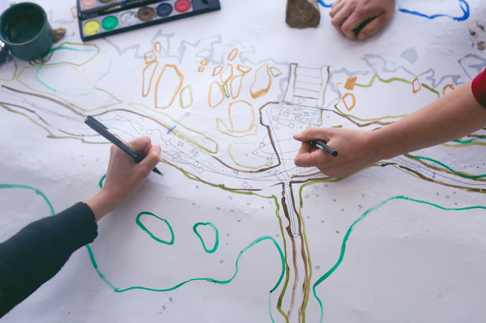
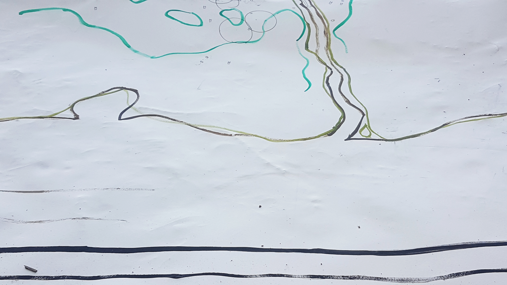
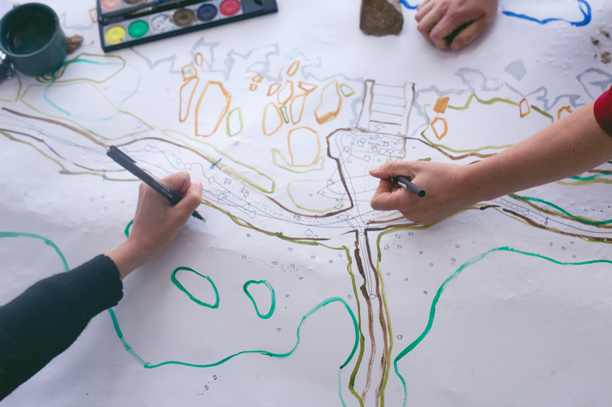
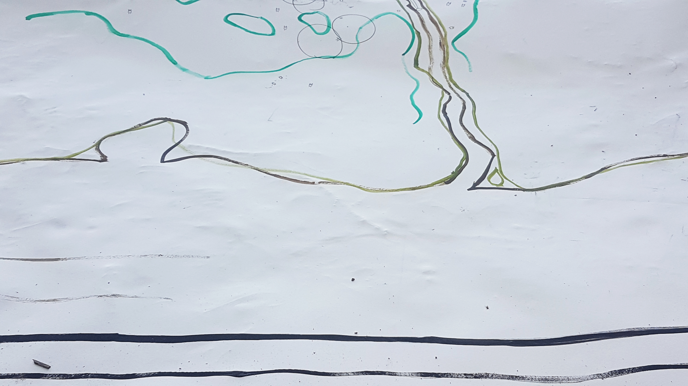

On the Impossibility of Drawing a River
Maps are standardized representations of the whole. With mathematical choices, map-makers decide what is represented and what not. In these times that we have to ask ourselves how the actors Humankind and Nature relate and interact, we should also ask ourselves if the current modes of representation serve what we want to tell. This project consisted of a workshop on including non-human perspectives in maps and an own attempt to map the impossible: a worthy representation of everything that makes up for an environment and not just the human.
Supported by the Goethe-Institut Bratislava & Slovak Arts Council
In Collaboration with Myriel Milicevic

 


